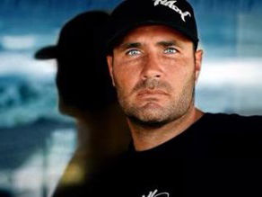
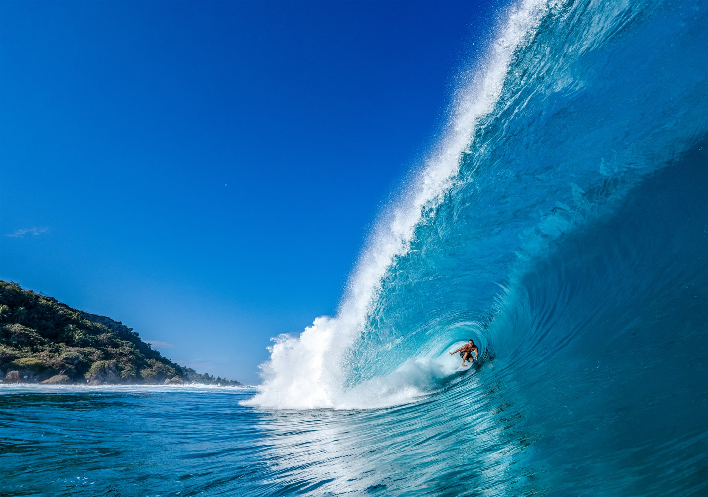

About us
Ardiel Jimenez brings surf, image-making, and production together.
Public profiles and surf coverage show Ardiel as a creative rooted in the Canary Islands, with a strong connection to the water and a sharp eye for photography, cinema, music, and travel. That background helps explain why Ardi Rent & Service feels like both a rental company and a visual studio.
The story behind the brand is simple: Ardiel understands motion, timing, and live visual work. In surf imagery and public profile photos, he appears both as a subject and as a storyteller, which matches the way this business combines gear rental with hands-on production support.


The brand is built around gear, story, and the ability to move between the sea, the studio, and the set.
Ardi Rent & ServiceProjects & achievements
Event production, official coverage, and competitive milestones.
This section highlights major projects and professional achievements tied to Ardi’s event work, surfing media coverage, and career track record.
La Marginal Surfing Pro (WSL QS 3000) — regreso oficial 2024
La WSL confirmó el regreso competitivo de Puerto Rico con sede en El Rastrial, Arecibo, y una ventana oficial del 30 de octubre al 3 de noviembre de 2024.
Open full storyFinales La Marginal 2024 — resultados y cobertura por días
Caso completo de competencia: cronograma oficial, notas diarias, highlights y ganadores del evento inaugural en Arecibo.
Open full storyISA World Surfing Games — Arecibo 2024
Documentación del evento ISA en La Marginal como etapa de clasificación olímpica, con agenda y resultados oficiales.
Open full storyArecibo 2025: doble ventana ALAS + WSL
Evolución del proyecto en 2025 con dos fines de semana de torneo y proyección internacional de más de 300 atletas.
Open full storyCampeón Mundial ISA Dropknee (2011)
Hito competitivo internacional documentado en fuentes ISA y medios deportivos de la época.
Open full storyArdiel Jimenez y TURBO Bodyboards
Nota histórica sobre su integración al equipo TURBO tras el título ISA Dropknee, como punto de validación dentro del circuito.
Open full storyCobertura en TV y prensa de Puerto Rico
Resumen editorial de notas en TV y medios noticiosos sobre La Marginal y su impacto deportivo y turístico.
Open full storyMundoRad y ecosistema editorial de surf
Contexto documental de la marca MundoRad en publicaciones y patrocinios asociados al surf en Puerto Rico.
Open full story